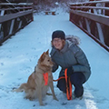
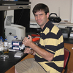
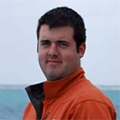
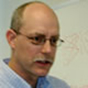
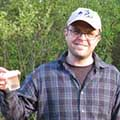

Explorations in Data Analyses for Metagenomic Advances in Microbial Ecology (EDAMAME) Workshop
August 13th to August 20th, 2014
Kellogg Biological Station, Michigan State University, Hickory Corners, MI (map)
New! The EDAMAME Logistics Page is live!
Instructors: Dr. Ashley Shade, Dr. Tracy Teal, Dr. Joshua Herr
Tweet! #edamame2014
Do you have questions? Please e-mail us at edamame.course@gmail.com.
Thank you to Amazon Web Services for providing computing support for EDAMAME!
Thank you to Michigan State's High Performance Computing Center for providing coffee and snacks to EDAMAME!

Course Description
This intensive one-week summer workshop will guide attendees in ecologically analyzing microbial communities that have been observed using short-read tag and shotgun metagenomics sequencing data.
No prior experience is necessary. Two years or more of graduate school in a biological science is strongly suggested. Faculty, postdocs, and research staff are more than welcome!
Students will gain practical experience in:
- Getting around in the shell - Introduction to Linux/Unix commands and executing Python scripts
- Tag-Sequence Analysis - Installing and using QIIME and mothur for processing and quality control of microbial tag-sequences, generating a taxon-table and for exploratory analyses
- Microbial metagenomes - data processing, quality control, gene assignment, and metagenome assembly
- R (vegan package) for multivariate analyses of microbial diversity and ecological interpretation
- Overview of online tools and databases with public microbial data: RDP, MG-RAST, CAMERA, VAMPS
Learning Objectives
Workshop attendees will be able to:
- Analyze microbial communities from an ecological perspective.
- Explain the process of high-throughput sequencing, provide an overview of data-handling specific to these technologies, and discuss their biases.
- Differentiate quantitative and categorical contextual data associated with microbial observations, and choose appropriate analysis strategies for each in interpreting community patterns. This includes: Visualizing community data, Testing for statistically significant patterns, Linking environmental or experimental treatment data to microbial data, Assess the contributions of individual taxa to community patterns.
- Develop a working proficiency with QIIME, mothur, and R, cite alternatives available, and identify resources for troubleshooting and further reading
- Become familiar with publicly accessible microbial sequence databases and the tools that they offer for deposition and analyses
Location, dates, and course structure
The course will be held at the W.K. Kellogg Biological Station on Gull Lake in western Michigan from 9 am on Wednesday, August 13rd through 5 pm on Wednesday, August 20th. Morning and afternoon lectures will be interspersed with practical hands-on tutorials. Tutorials will use existing datasets for demonstration, but students also will have opportunity to apply these tools to to their own datasets. The final day will include a Choose Your Own Adventure, during which students will opt into one of several available special interest topics, including “Networks analyses,” “Scripting in Python,” and “Working with markers other than 16S rRNA.”
Room and board will be provided on-site (see enrolling, below). Sunday, August 17th, will be a half-day of rest & relaxation. Students should expect to arrive at KBS by Wednesday, August 13rd at 9 am and stay at KBS through Wednesday, August 20th at 5 pm. KBS is several hours away from the nearest airports and students coming from out of state should plan on arriving on Tuesday.
Applying for the course
An application is required, and we can accommodate only 24 attendees. We welcome people unaffiliated with MSU, and "students" of any career stage, including postdocs and faculty. Applicants are not selected on a first-come-first-serve basis, and we try to create a balanced class of diverse participants from disparate research areas.
Tuition, course cost, and enrolling
Course costs include room and board at KBS (see below: Lodging). It should be about $500. We will make arrangements for housing *after* choosing students; please do not contact KBS directly. Attendees are responsible for their own transportation to nearby airports; we will provide a shuttle from airport to KBS.
Lodging
For more information on course lodging and the course classroom, please see the Kellogg Biological Station website for information on the KBS Conference Facilities and KBS Meeting Rooms. Once the the course roster is selected we will work with the selected students to make housing arrangements at KBS.
Taking the course for-credit
There is no formal option for taking the course for credit at MSU or elsewhere.
Supplies
Please plan to bring a laptop (Mac OS X, Windows, or Linux are all OK). We are not able to provide computers.
Lodging and family
We plan to have housing available for family groups, and expect to also make child care options available for children in the 3-10 age range.
Instructors
Ashley Shade holds a Ph.D. in Microbiology from the University of Wisconsin-Madison. She is currently an Assistant Professor at Michigan State Microbiology and Molecular Genetics, where her lab uses multidisciplinary tools to understand the ecology of microbial communities in soils, waters, and plants. She has particular interests in understanding temporal patterns of diversity, the role of rare taxa in driving community changes, and community responses to extreme disturbances. She has led workshops in microbial sequence analyses and ecological interpretation at Yale University and at the Canadian Society for Ecology and Evolution meeting.
Tracy Teal received her PhD from California Institute of Technology and did her postdoctoral work at Michigan State University. She is currently an Assistant Professor at Michigan State University where she uses metagenomic approaches to assess the effects of land use change on microbial communities and associated greenhouse gas fluxes and works with the Enterics Research Investigational Network (ERIN) group to determine how the intestinal microbiota provides a barrier to incoming pathogens. She has developed several bioinformatics tools and is engaged in training researchers in computational techniques as an instructor for Software Carpentry and MSU’s Institute for Cyber-Enabled Research.
Josh Herr holds a Ph.D. in Integrative Biology from Pennsylvania State University. He is currently a post-doctoral researcher at Michigan State University in the Department of Microbiology & Molecular Genetics. Josh’s research is focused on the taxonomic and functional identification of fungi and bacteria associated with soil, plants, insects, and -- through his association with the Enterics Research Investigational Network (ERIN) -- the intestinal microbiota of humans and cattle. Josh blogs about his research interests at Cyme & Cystidium, is an instructor for Software Carpentry, and is an editor at the bioinformatics help forum Biostar.
Guest Speakers and Instructors
Jack Gilbert University of Chicago, Argonne National Laboratories, Earth Microbiome Project
Pat Schloss University of Michigan, mothur Master
Stuart Jones University of Notre Dame, Aquatic Microbial & Ecosystem Ecology
Jim Cole Michigan State, Center for Microbial Ecology, Ribosomal Database Project
Adina Chuang Howe
Kevin Theis, Michigan State
Kathyrn Docherty Western Michigan University, National Ecological Observatories Network (NEON)
Jay Lennon Indiana University
C. Titus Brown Michigan State University, Computational Guru, Metagenomics Master
Jim Tiedje Michigan State University, Center for Microbial Ecology
Dirk Colbry, Michigan State, High Performance Computing Center